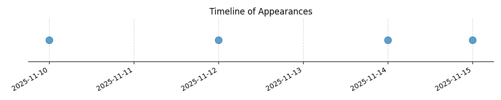

Kategorie: Letecké předpisy
Otázka se týká dodržování pravidel pro letové hladiny (Flight Levels) při traťových letech VFR (Visual Flight Rules) nad určitou nadmořskou výškou a ve specifickém směru letu. Toto spadá pod letecké předpisy, které definují pravidla pro letový provoz, včetně oddělení letadel v různých letových hladinách.

| Datum výskytu |
|---|
| 2025-11-15 |
| 2025-11-14 |
| 2025-11-12 |
| 2025-11-10 |